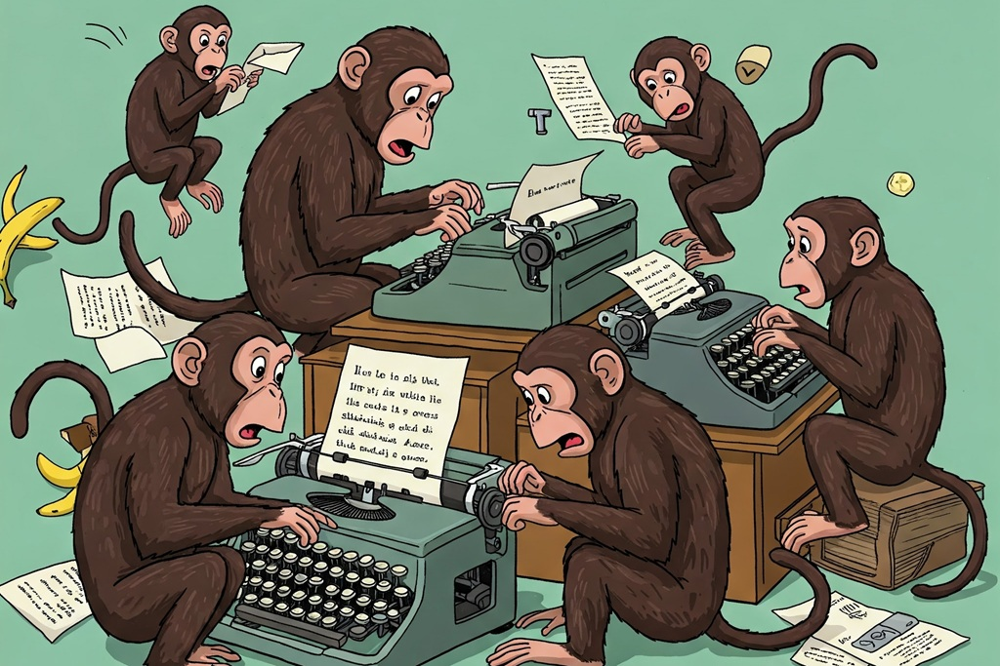

Seriously! Does everyone at your company really need a computer or a mobile phone?
Giving a computer or phone to any member of staff should always be thought through very carefully and is not the cut-and-dried decision you think it is. You may think your company is being progressive by creating “mobile-everything” systems, but it is actually a very rare case where, say, factory floor, or production staff require phones or computers to do their job. Yet some companies insist on it!
Yes, staff may still need to access the production order or scheduling systems, but for this most factories have locked-down, single-function touchscreens which generally work reliably and efficiently.
Giving production staff actual personal computers, phones or laptops should really be the exception not the rule. If your system consists of your staff updating an excel screen, or your new system can only be accessed through a mobile, it is now your obligation to provide your staff with a mobile phone or a tablet and train them. The fact they already have a personal mobile phone is irrelevant, you cannot just let them use their personal device due to all the security risks and you are now obliged to provide them a business phone.
Computers and laptops are worse in many ways. Once a person has a personal computer, they need a log in account on the servers and email systems, antivirus, Microsoft office (to read the email attachments), licenses for all, training on how to use all these, support from IT, and they now loose half an hour every day reading emails. Worst case scenario is you have someone who may just download or click on that one attachment which will introduce ransomware or viruses into your company.
There are of course multiple sources of unproductive time these days for technology to compete with, bullshit jobs, superfluous middle-management, meetings which achieve nothing, and of course, the reams of reporting metrics for the business administrators and accounts people. This last one I have seen first-hand a few times now, where a report might take several hours to produce, and require multiple other staff to waste their productive time to collate the data, but in the end has absolutely zero benefit for the business and possibly is not even read by anyone. And all of the above contribute to the spiral of “my staff are so busy we need more staff”.

So think before you get that super new mobile-enabled factory system, am I improving my business or reducing its efficiency. If you are producing the same thing day-in, day-out, the customer/government have not changed their requirements, and your are now changing your SOP’s then this should be ringing all your alarm bells. Do the risk analysis, do the long-term Return On Investment (ROI) calculation (which also includes all the maintenance and extra staff you have now hired and the systems replacement costs) and if it doesn’t make sense then simplify the requirements or go back to the drawing board.